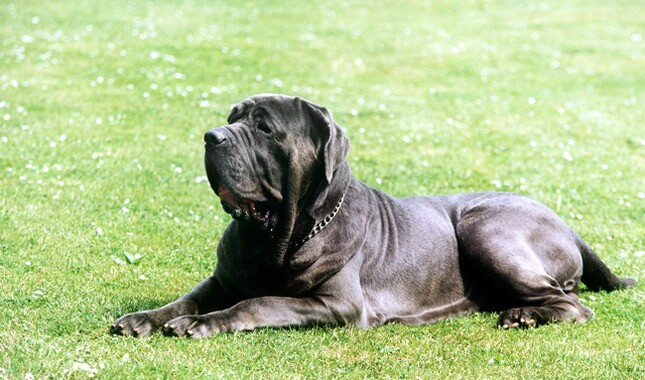

Neapolitan Mastiff
Neapolitan Mastiff is a sizeable dog, finding its place in many moments in history.
The floppy and wrinkled pup may not seem that agile,
but they are fairly confident, quick, and active.
-
These dogs are highly protective of the owner families,
giving very strong and fearless stares.
- Neapolitan Mastiffs are easily found in shelters and rescues at a lower price,
though they can be adopted from breeders as well.
- These dogs do not have many needs when it comes to exercise.
A bit of room at home and a little time on a leash for a walk is good enough for them.

link to index.html